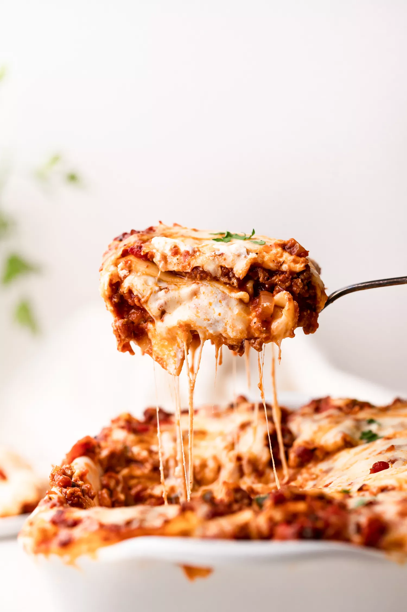

Lasanga

Description
Lasanga is one of Italy's most beloved dishes worldwide. Renowned for it's strong flavor and large portions, it has earned a reputation as one of the world's most foremost comfort foods.
Thankfully making a lasanga is actually pretty simple, requiring only a few key ingredients and minimal prep time. Here is my recipe for a delicious and filling lasanga.
Ingredients
- 2 teaspoons extra virgin olive oil
- 750g lean beef mince
- 90g prosciutoo
- tomato puree
- 200ml hot beef stock
- grated nutmeg
- 300g pack fresh lasanga sheets
- white sauce
- 125g ball mozzarella
- 800g passata
Instructions
- To make the meat sauce, heat 2 tbsp olive oil in a frying pan and cook 750g lean beef mince in two batches for about 10mins until browned all over.
- Finely chop 4 slices of prosciutto from a 90g pack, then stir through the meat mixture.
- Pour over 800g passata and 200ml beef stock mixture. Add a little grated nutmeg, then season.
- Bring up to the boil, then simmer for 30mins until the sauce looks rich.
- Heat oven to 180c/fan 160c/gas 4 and lightly oil an ovenproof dish (roughly 30cmx2cm).
- Spoon one third of the meat sauce into the dish, then cover with some fresh lasanga sheets from a 300g pack. Drizzle over roughly 130g white sauce.
- Repeat until you have 3 layers of pasta. Cover with the remaining white sauce, ensuring there isn't any pasta poking through.
- Scatter 125g torn mozzarella over the top.
- Arrange the rest of the prosciutto on the top. Bake for 45 mins until the top is bubbling and lightly browned.